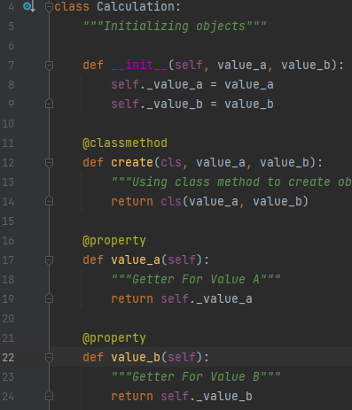

SOLID OBJECT ORIENTED DESIGN
SOLID is an acronym for the first five object-oriented design (OOD) principles by Robert C. Martin (also known as Uncle Bob). Note: While these principles can apply to various programming languages, the sample code contained in this article will use PHP. These principles establish practices that lend to developing software with considerations for maintaining and extending as the project grows. Adopting these practices can also contribute to avoiding code smells, refactoring code, and Agile or Adaptive software development. SOLID stands for: S - Single-responsibility Principle O - Open-closed Principle L - Liskov Substitution Principle I - Interface Segregation Principle D - Dependency Inversion Principle In this article, you will be introduced to each principle individually to understand how SOLID can help make you a better developer.
Single-responsibility Principle (SRP) states: A class should have one and only one reason to change, meaning that a class should have only one job.
Open-closed Principle (OCP) states:
Objects or entities should be open for extension but closed for modification.
This means that a class should be extendable without modifying the class itself.

here in the image variables are declared in constructor. they are declared for using in addition, subtraction, multiplication, division.
but they can also be used for exponents and other calculations.
Liskov Substitution Principle states: Let q(x) be a property provable about objects of x of type T. Then q(y) should be provable for objects y of type S where S is a subtype of T. This means that every subclass or derived class should be substitutable for their base or parent class.
Interface segregation principle states: A client should never be forced to implement an interface that it doesn’t use, or clients shouldn’t be forced to depend on methods they do not use.
Dependency inversion principle states: Entities must depend on abstractions, not on concretions. It states that the high-level module must not depend on the low-level module, but they should depend on abstractions. This principle allows for decoupling.